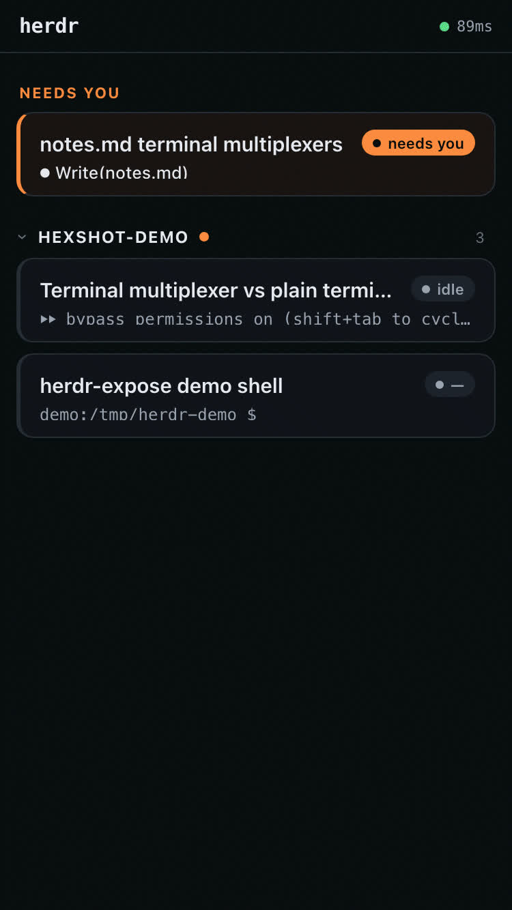
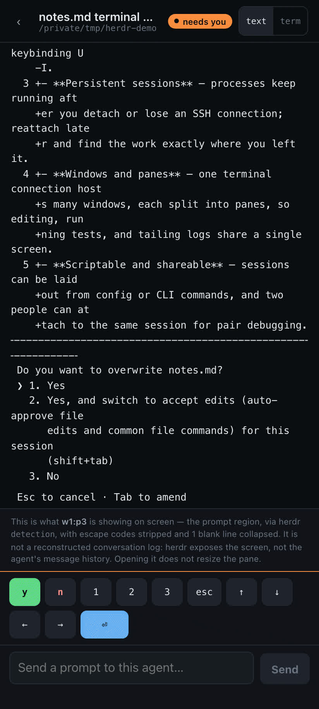
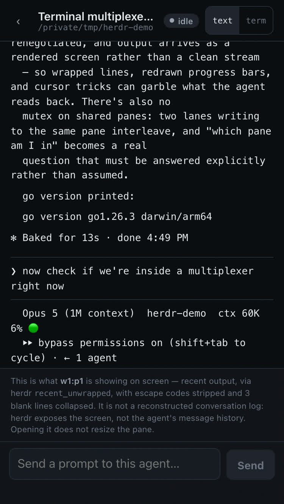
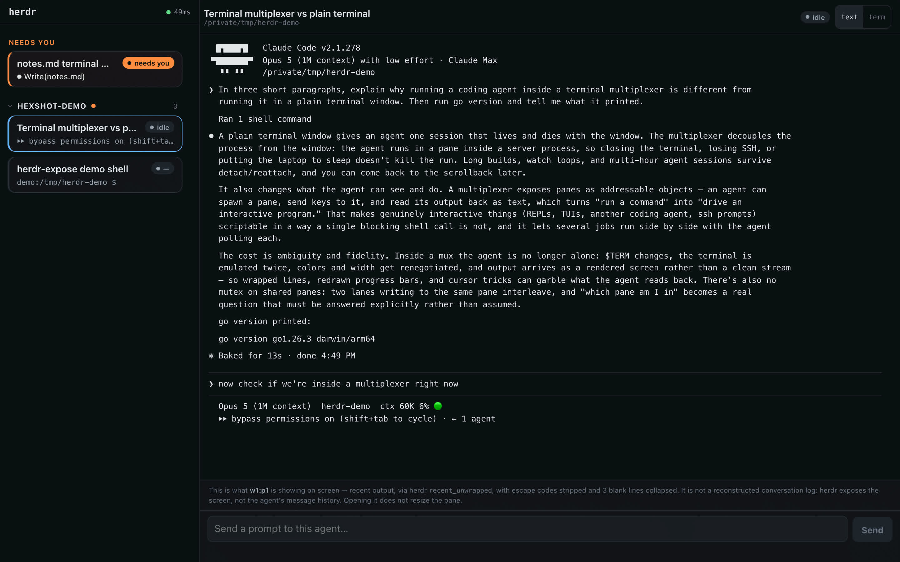

A Herdr plugin · one Go binary
Say “share this” to the agent. It hands back a link to itself.
Your agents run on one machine and you aren't always at it. So don't go to the machine and don't learn a CLI — tell the agent, in the session you are already in, and it puts itself in a browser: Claude Code, Codex, Devin, Gemini, Copilot, Cursor, any of the 21 agent kinds Herdr detects. Read it from the laptop in the other room, a tablet, a phone. Answer the ones that are blocked. Hand a teammate a link scoped to one session that expires on its own. The web app is inside the binary.
$ herdr plugin install muthuishere/herdr-expose
› share this
The first command installs three things: the binary, the Herdr plugin,
and the agent skill. After that the second line is not a command — it is
what you say to the agent. It runs herdr-expose share for
you and reports back the URL and the pairing code. Type it yourself if
you would rather. Or skip sharing entirely:
herdr-expose daemon, then 127.0.0.1:21118
right where you are sitting.
Why this exists
An agent is blocked on a question, and whoever could answer it is not at that keyboard.
Coding agents work for minutes at a time, then stop and ask. Until someone answers, the thing just sits there. The person who could answer is usually one room, one machine, or one company away.
-
01
You, at a different machine. Agents are stranded on whichever machine you are not currently sitting at. The desktop upstairs is running three of them; you are on the sofa with a laptop.
-
02
Your other machines, all of them. Two or three boxes, agents on each, and no single place that shows you the lot. One URL on your own network and every device in the house reaches every pane.
-
03
Somebody else entirely. A client or a teammate who needs to work on it — read what the agent is doing, answer its questions, drive it. Not watch you share a screen. Not hold SSH to your laptop forever.
What you would otherwise do instead
- SSH in Fine on a laptop with your keys on it. On a tablet or a phone it is a hundred-column TUI squeezed onto a small screen. And it is not something you can hand to anyone else: shell on your machine is not scoped to one session, not time-boxed, and not revoked by being forgotten about.
- A terminal-mirroring tool It mirrors the character grid, so you get a faithful copy of something that was never designed for the screen you are holding. Worse: attaching resizes the pane, the agent repaints, and the history you opened it to read is gone. Looking at it breaks it — and that is far worse when the person looking is not you.
- A screen share They can watch and nothing else; you are still the only pair of hands in the room. It ends when you close the laptop, and it shows them everything on your screen rather than the one session you meant.
- Nothing You walk back to the desk.
Whoever opens it has exactly one question: what is it doing, and does it need me? So that is what this answers. Agent panes render as readable text that reflows to whatever screen it was opened on — not a shrunken copy of a terminal grid. A blocked agent gets answered in one tap. And looking does not touch: the reading view declares no geometry at all, so someone opening a pane — on a tablet, or on the far end of a link you sent — cannot resize or repaint it on the machine it is actually running on.
What it looks like
The same agents, on whatever you happen to be holding.
One layout for a wide screen, one for a narrow one — the same server, the same session.
A real session through a real tunnel — two Claude agents and a shell, no mock-ups and nothing staged. One of them stops to ask whether it may overwrite a file; it gets answered from the phone, and the reply lands back in the terminal.




The panels below are hand-built HTML styled from the app's own stylesheet — a faithful drawing, not a photograph. They are here because they show the two layouts side by side, which no single screenshot can.
Run migration 0042 against dev? It drops the old plaintext column, which is not reversible.
waiting · 2m 40sPASS src/net/connection.test.ts PASS src/store/store.test.ts 41 passed, 0 failed (8.2s)
The laptop in the other room, on your own network. A sidebar of every pane on the machine, and a tile per pane so twenty of them do not cost twenty live terminals. The one that is blocked shows its question, because that is the only preview worth reading. Swipe the panel above to see the whole window.
Needs you
-
claude · api needs youRun migration 0042 against dev? (y/n)
-
codex · web done✓ 41 tests passed in 8.2s
-
claude · infra workingworking · 4m 12s
-
shell idle~/gitworkspace/reqsume
Narrow, the list answers "does anything need me?" first. Blocked and finished panes are pinned to the top. A working pane says working and how long — not what it printed forty milliseconds ago, because a line that changes ten times a second informs nobody. Seen state is per device, so glancing at a pane on the desktop does not wipe the badge on the phone.
This agent is waiting for an answer. What follows is the prompt region.
Migration 0042 adds pairing_codes and drops the old plaintext column, which is not reversible.Run migration 0042 against dev? 1. Yes, run it 2. No, show me the SQL first 3. No, and stop here
This is what api is showing on screen — the prompt region,
via herdr detection, with escape codes stripped. It
is not a reconstructed conversation log: herdr exposes the
screen, not the agent's message history. Opening it does not
resize the pane.
The reading view wraps to your viewport, never to the PTY. A
119-column agent reads at 375px. The footer is always there and never
dismissible: it says which buffer this came from and what was changed,
so nothing is dressed up as a conversation we did not actually have.
The keys go over the control plane — tapping y answers the
agent without attaching a terminal to it, so the person doing the
answering never disturbs the pane they are answering.
Three decisions the rest follows from
Read it, don't mirror it. Look without touching. Never climb a rung for you.
A rendering, not a mirror
Agent TUIs paint incrementally near the bottom of a fixed grid. A browser cannot reflow that grid, because the server only ever sees the post-layout characters. So the default view asks herdr for the pane's recent output, strips the escape codes server-side, and lays it out as text at your width.
Looking must not touch
A reading subscriber declares no geometry, so there is no SIGWINCH, no repaint, no lost scrollback on the machine you left behind — and none when the person reading it is someone you sent a link to. The exact terminal view still exists: one tap away, stating its cost the first time per pane, and waiting for you to agree.
The ladder is climbed, never guessed
This binary runs commands in your agent sessions. The blast radius of each rung differs by orders of magnitude — this machine, this room, the whole internet — so that difference is never a config key you forgot you set. A failed request degrades down, loudly. Nothing ever escalates.
What you can do
Six verbs, and one of them is a panic button.
- Read an agentPanes render as readable text that reflows to whatever screen opened them — not a shrunken copy of a terminal grid.
- Answer itType a reply, or tap y / n / 1 2 3 / esc / arrows when it is blocked on a question. Generic across agent kinds.
- Give someone a link
herdr-expose share— a URL scoped to one session in the server, pairing-gated, gone when it expires. They can read that session and drive it; the rest of your machine is not merely hidden from them, it is absent. - Reach all of them yourself
herdr-expose share --all— every session on the machine, which is exactly what you want when the other device is your own. It reads back what that means before it does it. - From further than the house
--quickfor a throwawaytrycloudflare.comURL,--domain yours.comfor your own name. - Stop everything
herdr-expose panic— every share revoked and the main tunnel down, in one pass.
The four rungs
- no flag Your own network — this machine and every device on itshare default This is the everyday case: your other laptop, the desktop upstairs, a tablet, a phone. A share exists to be opened from somewhere else, so loopback would make it pointless. The daemon's own default stays loopback, because it serves whoever is already sitting there.
-
--quick
A throwaway
trycloudflare.comhostname Nothing is created in your Cloudflare account, so expiry is just stopping the process. - --domain X The internet, on a name you own Expiry also deletes the DNS record and the named tunnel — only the ones it created.
- --local Loopback only — an explicit opt-in, for testing Bound to this machine. Useful for checking what a share actually exposes before you hand the link to anyone.
Cloudflare is the only built-in transport; anything else is an adapter you
write. A --quick or --domain request with no
cloudflared to run degrades to your network and prints why —
because you did ask to be reachable, and that is the nearest honest answer.
What actually makes this different
Every other way to do this is something you operate. This one, the agent operates.
The tools in this space all end at the same place — a browser showing your terminal — and they all start at the same place too: you. You install the app, you scan the QR, you keep the relay account alive, you remember the flag. The agent is the subject of the sentence and never the one saying it.
herdr plugin install puts a skill called
herdr-share next to the binary. After that, sharing is
something the agent knows how to do. You say share this, or
put this on my phone, or send Priya a link to this one,
and it picks the verb, runs it, and reads the URL and the pairing code
back to you. You never left the session you were in.
Worth saying plainly, because it is checkable: Herdr's plugin format has no concept of a skill at all — the manifest covers actions, panes, keybindings, link handlers, startup hooks and storage, and the word “skill” does not appear in its plugin documentation. This plugin installs one anyway, as part of its build. That is the whole reason it feels different to use, and it is the one thing no other plugin in that marketplace ships.
Next to the alternatives
The row that matters is the first one.
| herdr-expose | VibeTunnel | Omnara | Happy Coder | Claude Remote Control | |
|---|---|---|---|---|---|
| Who starts the share | The agent — you say “share this” | You do | You do | You do | You do — scan a QR |
| Ships an agent skill | Yes — herdr-share |
No — a terminal proxy, no skill or MCP | No | No | n/a |
| Account or relay | None — your own network, direct | None | Relay + account, $9/mo; plaintext on their servers unless self-hosted | Free relay, end-to-end encrypted, self-hostable | Through Anthropic's servers |
| On a name you own | --domain yours.com — your Cloudflare account; expiry deletes the DNS record and the tunnel it made |
Bring your own tunnel, wired up by hand | Their hostname | Their hostname | No |
| Windows | Yes — verified on real hardware, no Administrator rights | “Windows is not yet supported” | not claimed | Yes | Through WSL |
| Agents it covers | 21 kinds Herdr detects, plus any plain shell | Any terminal | Claude Code | Claude Code and Codex | Claude Code only |
| What a link exposes | One session — pairing-gated, expires on its own | Server-wide auth; no per-session expiry documented | Your account's sessions | Your account's sessions | The session you paired |
| What it costs you | It needs Herdr | — | $9/mo | — | A Pro or Max plan |
Two rows are deliberately not a clean sweep. Happy Coder runs on Windows too — VibeTunnel is the one that says it does not — and herdr-expose is the only one here that needs another tool installed, namely Herdr, which the rest do not. A comparison you can catch out on one row is worth nothing on the others, so those stay in. Everything above is from each project's own documentation, as of September 2026; check it before you believe it.
Before you run it
This gives a browser control of a terminal.
Typing into it runs commands as you, on your machine. The moment a tunnel is up, that is a remote code execution endpoint on the public internet.
That is the feature. A terminal you cannot type into is a screenshot. So the security here is not a checkbox bolted to the side — it is entirely about who gets to type.
- Nothing is exposed unless you ask. The daemon's default is this machine only, and it never escalates to the internet on its own.
- The pairing code is only ever shown on this machine — the terminal, or the QR pane inside the Herdr TUI. No HTTP endpoint mints or reveals one; the pairing endpoint only accepts codes. Codes are six characters, single-use, valid ten minutes, rate-limited per source.
- Every share expires, so access ends whether or not you remember it. There is no permanent share — a long one is thirty days. Each is time-boxed three ways, and scope is enforced in the server: for whoever you sent the link to, the sessions you did not share are absent from the tree, not merely hidden from the screen. Revoke early with one command if you want it back sooner.
- You do not choose the bind address; the mode does. There is no free-form setting to get wrong. Device tokens are 32 random bytes with a sliding 30-day expiry, capped at 32 devices, individually revocable. Secrets are stored as SHA-256 hashes and compared in constant time — never plaintext, never in a log.
- And what you have to do: take the tunnel down when you are done, do not leave LAN mode on at a coffee shop, and treat the URL as a credential even though it is not one. Your tunnel provider terminates TLS — this is not end-to-end encrypted, and nobody should imply otherwise.
herdr-expose doctor checks the lot and tells you which part is unhappy.
Read further
The API is the product.
The web app is its first client. A native one is meant to be the second, built against a documented, versioned HTTP + WebSocket contract with no access to this repository.